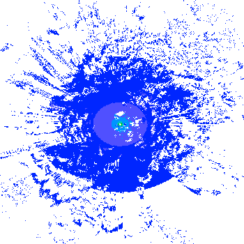

Wavetrace 4.0 documentation¶
Introduction¶
Wavetrace is a Python 3.5 package designed to produce radio signal coverage reports, such as GeoTIFF files of signal strength contours,
{kind=link}

given radio transmitter data and topography data around the transmitters. It uses SPLAT! to predict the attenuation of radio signals, which implements a Longley-Rice model.
Wavetrace can also compute line-of-site maps for geostationary satellites:

Wavetrace is intended for use in New Zealand but can be configured to work elsewhere on Earth.
Installation¶
- Install SPLAT! >= 1.4.0, GDAL >= 1.11, and ImageMagick. For example, to install these on a Linux system do
sudo apt-get update; sudo apt-get install splat gdal-bin python-gdal imagemagick - Create a Python 3.5 virtual environment
- In your virtual environment, install Wavetrace via Pip via
pip install wavetrace
Usage¶
Here is a common workflow for computing radio signal coverage reports for terrestrial transmitters.
- Create a CSV file containing transmitter data; see
tests/data/transmitters.csv - Process the transmitter data into SPLAT! files via the function
wavetrace.main.process_transmitters - Download topography data around the transmitters via the functions
wavetrace.main.compute_tilesandwavetrace.main.download_topography. Topography data comes in two flavors: SRTM3 (standard definition; 3 arc second resolution; roughly 66 meters at 45 degrees south latitude) or SRTM1 (high definition; 1 arc second resolution; roughly 22 meters at 45 degrees south latitude). SPLAT! can only handle those two formats. - Process the topography data into SPLAT! files via the function
wavetrace.main.process_topography - Compute signal coverage reports, which include GeoTIFF signal strength contour maps, from the processed transmitter and topography data via the function
wavetrace.main.compute_coverage
See the IPython notebook ipynb/examples.ipynb for a detailed example.
Additionally, you can call the most useful functions in the module wavetrace.main through Wavey, a command line interface for Wavetrace implemented in the module wavetrace.cli.
Further Reading¶
Authors¶
- Chris Guest (2013-06)
- Alex Raichev (2016-08)
wavetrace Package¶
The wavetrace package contains four modules that depend on each other like this:
main -> constants, utilities
utilities -> constants
cli -> main, utilities, constants
main Module¶
- CONVENTIONS:
- All longitudes and latitudes below are referenced to the WGS84 ellipsoid, unless stated otherwise
-
wavetrace.main.build_splat_az(transmitter)¶ Return the text (string) content of a SPLAT! azimuth file (AZ file) corresponding to the given transmitter.
- INPUT:
transmitter: dictionary of the same form as any one of the elements in the list output byread_transmitters()
- OUTPUT:
- String
- NOTES:
- A transmitter with no
'bearing'or'horizontal_beamwidth'data will produce the string'0 0'.
-
wavetrace.main.build_splat_el(transmitter)¶ Return the text (string) content of a SPLAT! elevation file (EL file) corresponding to the given transmitter.
- INPUT:
transmitter: dictionary of the same form as any one of the elements in the list output byread_transmitters()
- OUTPUT:
- String
- NOTES:
- A transmitter with no
'bearing'or'antenna_downtilt'or'vertical_beamwidth'data will produce the string'0 0'.
-
wavetrace.main.build_splat_lrp(transmitter, earth_dielectric_constant=15, earth_conductivity=0.005, radio_climate=6, fraction_of_time=0.5, fraction_of_situations=0.5)¶ Return the text (string) content of a SPLAT! irregular topography model parameter file (LRP file) corresponding to the given transmitter.
- INPUT:
transmitter: dictionary of the same form as any one of the elements in the list output byread_transmitters()earth_dielectric_constant: floatearth_conductivity: floatradio_climate: integerfraction_of_time: float in [0, 1]fraction_of_situations: float in [0, 1]
- OUTPUT:
- String
-
wavetrace.main.build_splat_qth(transmitter)¶ Return the text content of a SPLAT! site location file (QTH file) corresponding to the given transmitter.
- INPUT:
transmitter: dictionary of the same form as any one of the elements in the list output byread_transmitters()
- OUTPUT:
- String.
-
wavetrace.main.build_transmitter_name(network_name, site_name)¶ Return a string that is the network name with spaces removed followed by an underscore followed by the site name with spaces removed.
EXAMPLES:
>>> build_transmitter_name('Slap hAppy', 'Go go ') 'SlaphAppy_Gogo'
-
wavetrace.main.check_and_format_transmitters(transmitters)¶ Check and format the given list of transmitter dictionaries.
- INPUT:
transmitters: list; same format as output ofread_transmitters()
- OUTPUT:
The given list of transmitters dictionaries altered as follows. For each dictionary,
- create a
namefield from thenetwork_nameandsite_namefields - convert the numerical fields to floats
- create a
- NOTES:
- Raises a
ValueErrorif the list of transmitters is empty, or if theREQUIRED_TRANSMITTER_FIELDSare not present in each transmitter dictionary, or if the any of the field data is improperly formatted.
-
wavetrace.main.compute_coverage(in_path, out_path, transmitters=None, receiver_sensitivity=-110, keep_ppm=False, high_definition=False, make_shp=False)¶ Produce coverage reports by running
compute_coverage_0()and then runpost_process_coverage_0().
-
wavetrace.main.compute_coverage_0(in_path, out_path, transmitters=None, receiver_sensitivity=-110, high_definition=False)¶ Create a SPLAT! coverage report for every transmitter with data located at
in_path, or iftransmittersis given, then every transmitter in that list with data data located atin_path. Write each report to the directoryout_path, creating the directory if necessary. A report comprises the files'<transmitter name>-site_report.txt''<transmitter name>.kml': KML file containing transmitter feature and'<transmitter name>.ppm''<transmitter name>.ppm': PPM file depicting a contour plot of the transmitter signal strength'<transmitter name>-ck.ppm': PPM file depicting a legend for the signal strengths in'<transmitter name>.ppm'
- INPUT:
in_path: string or Path object specifying a directory; all the SPLAT! transmitter and elevation data should lie hereout_path: string or Path object specifying a directorytransmitters: list of transmitter dictionaries (in the form output byread_transmitters()) to restrict to; ifNone, then all transmitters inin_pathwill be usedreceiver_sensitivity: float; measured in decibels; path loss threshold beyond which signal strength contours will not be plottedhigh_definition: boolean
- OUTPUT:
- None.
- NOTES:
- Calls SPLAT!’s
splatorsplat-hd(ifhigh_definition) to do the work - Raises a
subprocess.CalledProcessErrorif SPLAT! fails - This is a time-intensive function. On a 3.6 GHz Intel Core i7 processor with 16 GB of RAM, this takes about 32 minutes for the 20 New Zealand test transmitters (in
tests/data/transmitters.csv) with their 13 standard definition topography files and takes about 687 minutes for the same 20 transmitters with their 13 high definition topography files.
- Calls SPLAT!’s
-
wavetrace.main.compute_look_angles(lon, lat, height, satellite_lon)¶ Given the longitude, latitude, and height in meters of a point P on Earth and given the longitude of a geostationary satellite S, return the azimuth and elevation in degrees of S relative to P, respectively.
- INPUT:
lon: float; longitude of Plat`: float; latitude of Pheight: float; distance in meters between P and the WGS84 ellipsoid; GPS heightsatellite_lon: float; longitude of S
- OUTPUT:
azimuth: float; degrees in [0, 360)elevation: float; degrees in [-90, 90]; a negative value indicates that S lies below the local horizon of P
NOTES:
- Algorithm taken from Determination of look angles to geostationary communication satellites by Tomas Soler David W. Eisemann
- The input
heightis the sum of H and N, where H is the SRTM elevation of P (the orthometric height; see the SRTM collection user guide) and N is the height of the EGM96 geoid above the WGS84 ellipsoid at P (the geoid height).
-
wavetrace.main.compute_satellite_los(in_path, satellite_lon, out_path, n=3, make_shp=False)¶ Given the path
in_pathto an SRTM1 or SRTM3 file and the longitude of a geostationary satellite, color with 8-bits of grayscale (pixel values from 0 to 255) the raster cells according to whether they are out (blackish, close to 0) or in (whitish, close to 255) of the line-of-site of the satellite, and save the result as a GeoTIFF file located atout_path. Ifmake_shp, then also create an ESRI Shapefile bundle (.dbf, .prj, .shp, and .shx files) out of the GeoTIFF and save it to a similar path (same path stem but with Shapefile path suffixes).- ALGORITHM:
- Partition the SRTM tile into
n**2square subtiles or roughly the same size - For each subtile, compute the longitude, latitude, and (WGS84) height of its center
- Compute the the look angles of the satellite from the center
- Use the look angles to shade the subtile via GDAL’s
gdaldem hillshadecommand - Merge the subtiles and save the result as a GeoTIFF file
- Partition the SRTM tile into
- NOTES:
- Calls
get_geoid_height()n**2times. Because that function is currently implemented as an HTTP GET request, that slows things down and also introducesn**2opportunities for failure (raising aValueError). - To roughly interpret the output raster values as actual satellite signal strengths, one would need to obtain some actual on-the-ground satellite readings.
- Calls
-
wavetrace.main.download_topography(tile_ids, path, high_definition=False)¶ Download from the public Gitlab repository https://gitlab.com/araichev/srtm_nz the SRTM1 or SRTM3 topography data corresponding to the given SRTM tile IDs and save the files to the directory
path, creating the directory if it does not exist.- INPUT:
tile_ids: list of strings; SRTM tile IDspath: string or Path object specifying a directoryhigh_definition: boolean; ifTruethen download SRTM1 tiles; otherwise download SRTM3 tiles
- OUTPUT:
- None
- NOTES:
- Only works for SRTM tiles covering New Zealand and raises a
ValueErrorif the set of tile IDs is not a subset ofSRTM_NZ_TILE_IDS
-
wavetrace.main.get_bounds_from_kml(kml_string)¶ Given the text content of a SPLAT! KML coverage file, return a list of floats of the form
[min_lon, min_lat, max_lon, max_lat]which describes the longitude-latitude bounding box of the coverage file. Raise anAttributeErrorif the KML does not contain a<LatLonBox>entry and hence is not a well-formed SPLAT! KML coverage file.
-
wavetrace.main.get_covering_tiles_ids(transmitters, transmitter_buffer=0.5, tile_ids=['S35E172', 'S35E173', 'S36E173', 'S36E174', 'S36E175', 'S37E173', 'S37E174', 'S37E175', 'S37E176', 'S38E174', 'S38E175', 'S38E176', 'S38E177', 'S38E178', 'S39E174', 'S39E175', 'S39E176', 'S39E177', 'S39E178', 'S40E173', 'S40E174', 'S40E175', 'S40E176', 'S40E177', 'S40E178', 'S41E172', 'S41E173', 'S41E174', 'S41E175', 'S41E176', 'S42E171', 'S42E172', 'S42E173', 'S42E174', 'S42E175', 'S42E176', 'S43E170', 'S43E171', 'S43E172', 'S43E173', 'S43E174', 'S44E168', 'S44E169', 'S44E170', 'S44E171', 'S44E172', 'S44E173', 'S45E167', 'S45E168', 'S45E169', 'S45E170', 'S45E171', 'S46E166', 'S46E167', 'S46E168', 'S46E169', 'S46E170', 'S46E171', 'S47E166', 'S47E167', 'S47E168', 'S47E169', 'S47E170', 'S48E167', 'S48E168'])¶ Given a list of transmitters (of the form output by
read_transmitters()), get their locations, buffer them bytransmitter_bufferdecimal degrees, and return an ordered list of the unique SRTM tile IDs intile_idswhose corresponding tiles intersect the buffers. As long astile_idsandtransmitter_bufferare big enough, the result will be a list of tile IDs to use when computing coverage for the given transmitters. The defaults are appropriate for transmitters in New Zealand.- NOTES:
- Regarding the transmitter buffer, one degree of latitude represents about 111 km on the ground and one degree of longitude at -45 degrees latitude represents about 78 km on the ground; see https://en.wikipedia.org/wiki/Decimal_degrees
-
wavetrace.main.get_geoid_height(lon, lat, num_tries=3)¶ Query https://geographiclib.sourceforge.io/cgi-bin/GeoidEval for the height in meters of the EGM96 geoid above the WGS84 ellipsoid for the given longitude and latitude. If the result is negative, then the geoid lies below the ellipsoid. Raise a
ValueErrorif the query fails afternum_triestries.- NOTES:
- It would be good to rewrite this function so that it does not depend on internet access. For starters, see https://github.com/vandry/geoidheight, which uses the EGM2008 ellipsoid.
-
wavetrace.main.get_lonlats(transmitters)¶ Return a list of longitude-latitude pairs (float pairs) representing the locations of the given transmitters. If
transmittersis empty, then return the empty list.- INPUT:
transmitters: a list of transmitters of the form output byread_transmitters()
- OUTPUT:
- String
-
wavetrace.main.partition(width, height, n=3)¶ Given the pixel width and pixel height of a rectangular image and an integer
n, partition the rectangle inton**2subrectangles, each of roughly the same sizes. Return a list of the subrectangle offsets and sizes for easy use with GDAL’sgdal_translate -srcwinoption. Each list item has the form (x-offset, y-offset, x-size, y-size) and the items/subrectangles are ordered from left to right and then from top to bottom, e.g. forn=3the layout of the subrectangles looks like this:------------- | 0 | 1 | 2 | ------------- | 3 | 4 | 5 | ------------- | 6 | 7 | 8 | -------------
The subrectangles in the right-most column and those in the bottom-most row will be slightly wider and taller, respectively, than the other subrectangles in case
widthorheightare not divisible byn, respectively.
-
wavetrace.main.postprocess_coverage_0(path, keep_ppm, make_shp)¶ Using the PPM files in the directory
pathdo the following:- Convert each PPM file into a PNG file, replacing white with transparency using ImageMagick
- Change the PPM reference in each KML file to the corresponding PNG file
- Convert the PNG coverage file (not the legend file) into GeoTIFF using GDAL
- Optionally create ESRI Shapefile bundles (.dbf, .prj, .shp, and .shx files) from the GeoTIFF files
- INPUT:
path: string or Path object; directory where coverage reports (outputs ofcompute_coverage()) liekeep_ppm: boolean; keep the original, large PPM files in the coverage reports if and only if this flag isTruemake_shp: boolean; create ESRI Shapefiles from the GeoTIFF files if and only if this flag isTrue
- OUTPUT:
- None.
-
wavetrace.main.process_topography(in_path, out_path, high_definition=False)¶ Convert each SRTM HGT topography file in the directory
in_pathto a SPLAT! Data File (SDF) file in the directoryout_path, creating the directory if it does not exist. Ifhigh_definition, then assume the input data is high definition.- INPUT:
in_path: string or Path object specifying a directoryout_path: string or Path object specifying a directoryhigh_definition: boolean
- OUTPUT:
- None.
- NOTES:
- Calls SPLAT!’s
srtm2sdforsrtm2sdf-hd(ifhigh_definition) command to do the work - Raises a
subprocess.CalledProcessErrorif SPLAT! fails to convert a file - Each SRTM1 or SRTM3 file must have a name of the form <SRTM tile ID>[.something].hgt.zip or <SRTM tile ID>[.something].hgt, e.g. S36E173.SRTMGL3.hgt.zip
- Calls SPLAT!’s
-
wavetrace.main.process_transmitters(in_path, out_path, earth_dielectric_constant=15, earth_conductivity=0.005, radio_climate=6, fraction_of_time=0.5, fraction_of_situations=0.5)¶ Read the CSV transmitter data at
in_path, and for each transmitter, create the following SPLAT! data for it and save it to the directoryout_path:- location data as a QTH file
- irregular topography model parameter as an LRP file
- azimuth data as an AZ file
- elevation data as an EL file
- INPUT:
in_path: string or Path object; location of a CSV file of transmitter dataout_path: string or Path object; directory to which to write outputsearth_dielectric_constant: float; Earth dielectric constant; SPLAT! parameter used to make an LRP fileearth_conductivity: float; Earth conductivity; SPLAT! parameter used to make an LRP fileradio_climate: integer; SPLAT! parameter used to make an LRP filefraction_of_time: float in [0, 1]; SPLAT! parameter used to make an LRP filefraction_of_situations: float in [0, 1]; SPLAT! parameter used to make an LRP file
- OUTPUT:
- None.
- NOTES:
The CSV file of transmitter data must include at least the columns, otherwise a
ValueErrorwill be raised.'network_name': name of transmitter network'site_name': name of transmitter site'longitude': decimal longitude of transmitter'latitude: decimal latitude of transmitter'antenna_height': height of transmitter antenna in meters above sea level'polarization': 0 for horizontal or 1 for vertical'frequency': frequency of transmitter in megaherz'power_eirp': effective radiated power of transmitter in watts
-
wavetrace.main.read_transmitters(path)¶ Return a list of dictionaries, one for each transmitter in the transmitters CSV file.
- INPUT:
path: string or Path object; location of a CSV file of transmitter data
- OUTPUT:
- List of dictionaries.
The keys for each transmitter come from the header row of the CSV file.
If
REQUIRED_TRANSMITTER_FIELDSis not a subset of these keys, then raise aValueError. Additionally, a ‘name’ field is added to each transmitter dictionary for later use and is the result ofbuild_transmitter_name(). - NOTES:
- For the format of the transmitters CSV file, see the notes section of
create_splat_transmitters().
utilities Module¶
- CONVENTIONS:
- All longitudes and latitudes below are referenced to the WGS84 ellipsoid, unless stated otherwise
-
wavetrace.utilities.build_feature(tile_id, be_precise=None)¶ Given an SRTM tile ID, a list of (decoded) GeoJSON Feature object corresponding to the WGS84 longitude-latitude boundary of the tile. Use the same
be_precisekeyword as inget_bounds().
-
wavetrace.utilities.build_polygon(tile_id, be_precise=None)¶ Given an SRTM tile ID, return a Shapely Polygon object corresponding to the longitude-latitude boundary of the tiles. Use the same
be_precisekeyword as inget_bounds().
-
wavetrace.utilities.check_lonlat(lon, lat)¶ Raise a
ValueErroriflonandlatdo not represent a valid longitude-latitude pair. Otherwise, return nothing.
-
wavetrace.utilities.check_tile_id(tile_id)¶ Raise a
ValueErrorif the given SRTM tile ID (string) is improperly formatted. Otherwise, return nothing.
-
wavetrace.utilities.compute_intersecting_tiles(geometries, tile_ids=['S35E172', 'S35E173', 'S36E173', 'S36E174', 'S36E175', 'S37E173', 'S37E174', 'S37E175', 'S37E176', 'S38E174', 'S38E175', 'S38E176', 'S38E177', 'S38E178', 'S39E174', 'S39E175', 'S39E176', 'S39E177', 'S39E178', 'S40E173', 'S40E174', 'S40E175', 'S40E176', 'S40E177', 'S40E178', 'S41E172', 'S41E173', 'S41E174', 'S41E175', 'S41E176', 'S42E171', 'S42E172', 'S42E173', 'S42E174', 'S42E175', 'S42E176', 'S43E170', 'S43E171', 'S43E172', 'S43E173', 'S43E174', 'S44E168', 'S44E169', 'S44E170', 'S44E171', 'S44E172', 'S44E173', 'S45E167', 'S45E168', 'S45E169', 'S45E170', 'S45E171', 'S46E166', 'S46E167', 'S46E168', 'S46E169', 'S46E170', 'S46E171', 'S47E166', 'S47E167', 'S47E168', 'S47E169', 'S47E170', 'S48E167', 'S48E168'])¶ Given a list of Shapely geometries in WGS84 coordinates, return an ordered list of the unique SRTM tile IDs in
tile_idswhose corresponding tiles intersect the geometries.- NOTES:
- Uses a simple double loop instead of a spatial index, so runs in O(num geometries * num tiles) time. That is fast enough for the 65 SRTM tiles that cover New Zealand. Could be fast enough for all SRTM tiles, but i never tried.
-
wavetrace.utilities.gdalinfo(path)¶ Given the path to an raster file, run
gdalinfoon the file and extract and return from the result a dictionary with the following keys and values:'width': pixel width of raster'height': pixel height of raster'center': center coordinates.
-
wavetrace.utilities.get_bounds(tile_id, be_precise=None)¶ Return the bounding box for the given SRTM tile ID.
- INPUT:
tile_id: string; ID of an SRTM tilebe_precise(optional): string; ‘SRTM1’ or ‘SRTM3’
- OUTPUT:
- List of integers of the form
[min_lon, min_lat, max_lon, max_lat]representing the longitude-latitude bounding box of the tile. This assumes that the tile is exactly 1 degree by 1 degree in dimension, which is not actually the case. Ifbe_preciseequals ‘SRTM1’ or ‘SRTM3’, then return the precise bounds corresponding to the tile type; SRTM1 tiles are 1 degree and 1 arcsecond in side length; SRTM3 tiles are 1 degree and 3 arcseconds in side length.
EXAMPLES:
>>> get_bounds('N04W027') [-27, 4, -26, 5] >>> get_bounds('N04W027', be_precise='SRTM1') [-27.000138888888888, 3.999861111111111, -25.999861111111112, 5.0001388888888885]
-
wavetrace.utilities.get_covering_tile_id(lon, lat)¶ Return the ID of the SRTM tile that covers the given longitude and latitude.
- INPUT:
lon: float; longitudelat: float; latitude
- OUTPUT:
- SRTM tile ID (string)
EXAMPLES:
>>> get_covering_tile_id(27.5, 3.64) 'N03E027'
- NOTES:
- SRTM data for an output tile might not actually exist, e.g. data for the tile N90E000 does not exist in NASA’s database.
-
wavetrace.utilities.get_tile_id(tile_path)¶ Given the path to an SRTM1 or SRTM3 tile, return the ID of the tile (a string), e.g. “S36E174” for the path “bingo/S36E174.SRTMGL1.hgt.zip” Assume that the tile ID is the first part of the file name, as is the SRTM convention.
-
wavetrace.utilities.rm_paths(*paths)¶ Delete the given file paths/directory paths, if they exists.
-
wavetrace.utilities.time_it(f)¶ Decorate function
fto measure and print elapsed time when executed.
constants Module¶
-
wavetrace.constants.EARTH_CONDUCTIVITY= 0.005¶ SPLAT! Earth earth_conductivity in Siemens per meter
-
wavetrace.constants.EARTH_DIELECTRIC_CONSTANT= 15¶ SPLAT! Earth dielectric constant. According to the SPLAT! documentation, typical Earth dielectric constants and conductivities are: Salt water, 80, 5.000; Good ground, 25, 0.020; Fresh water, 80, 0.010; Marshy land, 12, 0.007; Farmland or forest, 15, 0.005; Average ground, 15, 0.005; Mountain or sand, 13, 0.002; City, 5, 0.001; Poor ground, 4, 0.001;
-
wavetrace.constants.FRACTION_OF_SITUATIONS= 0.5¶ SPLAT! location variability parameter
-
wavetrace.constants.FRACTION_OF_TIME= 0.5¶ SPLAT! time variability parameter
-
wavetrace.constants.H_S= 35785863¶ Distance in meters of a geostationary satellite from the WGS84 ellipsoid
-
wavetrace.constants.RADIO_CLIMATE= 6¶ SPLAT! radio climate codes. 1=Equatorial (Congo); 2=Continental Subtropical (Sudan); 3=Maritime Subtropical (West coast of Africa); 4=Desert (Sahara); 5=Continental Temperate; 6=Maritime Temperate, over land (UK and west coasts of US & EU); 7=Maritime Temperate, over sea
-
wavetrace.constants.RECEIVER_SENSITIVITY= -110¶ SPLAT receiver sensitivity parameter in decibel-milliwatts (dBm). For example, minimum received signal power of wireless networks (802.11 variants) is -100 dBm.
-
wavetrace.constants.REQUIRED_TRANSMITTER_FIELDS= ['network_name', 'site_name', 'latitude', 'longitude', 'antenna_height', 'polarization', 'frequency', 'power_eirp']¶ Transmitter CSV files must have these header columns
-
wavetrace.constants.R_S= 42164000¶ Distance in meters of a geostationary satellite from the center of the Earth (and hence the center of the WGS84 ellipsoid); taken from the Wikipedia article Geostationary orbit
-
wavetrace.constants.SRTM_NZ_TILE_IDS= ['S35E172', 'S35E173', 'S36E173', 'S36E174', 'S36E175', 'S37E173', 'S37E174', 'S37E175', 'S37E176', 'S38E174', 'S38E175', 'S38E176', 'S38E177', 'S38E178', 'S39E174', 'S39E175', 'S39E176', 'S39E177', 'S39E178', 'S40E173', 'S40E174', 'S40E175', 'S40E176', 'S40E177', 'S40E178', 'S41E172', 'S41E173', 'S41E174', 'S41E175', 'S41E176', 'S42E171', 'S42E172', 'S42E173', 'S42E174', 'S42E175', 'S42E176', 'S43E170', 'S43E171', 'S43E172', 'S43E173', 'S43E174', 'S44E168', 'S44E169', 'S44E170', 'S44E171', 'S44E172', 'S44E173', 'S45E167', 'S45E168', 'S45E169', 'S45E170', 'S45E171', 'S46E166', 'S46E167', 'S46E168', 'S46E169', 'S46E170', 'S46E171', 'S47E166', 'S47E167', 'S47E168', 'S47E169', 'S47E170', 'S48E167', 'S48E168']¶ SRTM tiles that cover New Zealand; for a visual, see http://geojson.io/#id=gist:anonymous/81b4cb465f1c78941f665c9038494f0f&map=5/-41.360/172.463
-
wavetrace.constants.WGS84_A= 6378137¶ WGS84 semimajor axis in meters
-
wavetrace.constants.WGS84_E2= 0.0066943799901413165¶ WGS84 eccentricity squared (e^2)
-
wavetrace.constants.WGS84_F= 0.0033528106647474805¶ WGS84 flattening
cli Module¶
Sphinx auto-documentation does not work on this module, because all the functions inside are decorated by Click decorators, which don’t play nicely with Sphinx. So use the command line to access the documentation for Wavey, the command line interface for Wavetrace:
wavey --help
Usage: wavey [OPTIONS] COMMAND [ARGS]...
Options:
--help Show this message and exit.
Commands:
compute_coverage Compute radio signal coverage reports
compute_satellite_los Compute satellite line-of-sight
download_topography Download topography data (SRTM)
process_topography Process topography data (SRTM)
process_transmitters Process transmitter data (CSV)
get_covering_tiles_ids Compute SRTM tiles IDs needed
srtm_nz List the SRTM tiles that cover New Zealand